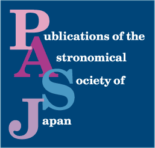
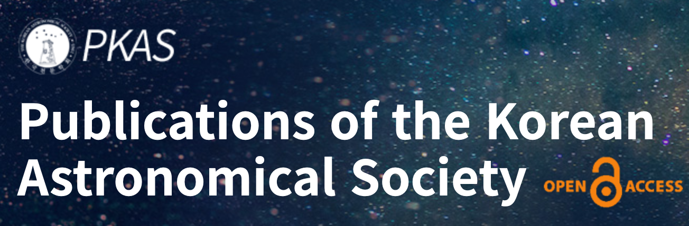
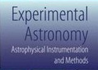

Education:
B. Sc., Institut Teknologi Bandung (2012)M. Sc., Institut Teknologi Bandung (2014)
Ph. D., Tohoku University (2018)
Work Experiences:
2020 - now Faculty Member at Faculty of Mathematics and Natural Sciences, ITB, Indonesia2020 - now Lecturer at Undergraduate Programme in Astronomy, ITB, Indonesia
2020 - now Researcher at Astronomy Research Group, ITB, Indonesia
2020 - now Researcher at Bosscha Observatory, ITB, Indonesia
2018 - 2021 Postdoctoral at Department of Physics with Prof. Kaiki T. Inoue, Kindai University, Japan
2019 - 2019 Academic Assistant at Undergarduate Programme in Astronomy, ITB, Indonesia
2018 - 2018 Researcher at Bosscha Observatory, ITB, Indonesia
2014 - 2018 Research Assistant at Kavli Institute for the Physics and Mathematics of the Universe (IPMU), The University of Tokyo, Japan
2017 - 2018 Part-time Research Assistant at Astronomical Institute with Prof. Masashi Chiba, Tohoku University, Japan
2017 - 2018 Part-time English Supporter at Future Global Leader, Tohoku University, Japan
2012 - 2014 Part-time Research Assistant at Astronomy Research Group with Dr. Hakim L. Malasan, ITB, Indonesia
2012 - 2014 Part-time Research Assistant at Astronomy Research Group with Prof. Taufiq Hidayat, ITB, Indonesia
Research Fields:
Observational Cosmology: Groups/Clusters of Galaxies, Gravitational Lensing. High-z Galaxies.Publication Links:

Publications:
| Year | Title | Authors | Journals | Links |
|---|---|---|---|---|
| 2020 | Strongly lensed candidates from the HSC transient survey | Chao, D. C.-Y.; Chan, J. H.-H.: Suyu, S. H.; ...; Jaelani. A. T.; ... et al. | A&A (Submitted) | |
| 2021 | Properties of the Environment of Galaxies in Clusters of Galaxies CL 0024+1654 and RX J0152.7−1357 | Premadi, P. W.; Nugroho, D. H.; Jaelani, A. T. | J. Math. Fund. Sci. (Submitted) | 
|
| 2021 | SILVERRUSH X: Machine Learning Selection of 9,318 LAEs at z = 2.2, 3.3, 4.9, 5.7, 6.6, and 7.0 from the HSC SSP and CHORUS Survey Data | Ono, Y.; Itoh, R.; Shibuya, T.; ...; Jaelani, A. T.; ... et al. | ApJ, 911, 2 | |
| 2021 | The Atacama Cosmology Telescope: A Catalog of > 4000 Sunyaev-Zel'dovich Galaxy Clusters | Hilton, M.; Sifón, C.; Naess, S.; ...; Jaelani. A. T.; ... et al. | ApJS, 253, 3 | |
| 2021 | Survey of Gravitationally-lensed Objects in HSC Imaging (SuGOHI) - VII. Discovery and Confirmation of Three Strongly Lensed Quasars | Jaelani. A. T.; Rusu, C. E.; Kayo, I; ... | MNRAS, 502, 1487 - 1493 | |
| 2020 | Survey of Gravitationally-lensed Objects in HSC Imaging (SuGOHI) - VI. Crowdsourced lens finding with Space Warps | Sonnenfeld, A.; Verma, A.; More, A.; ...; Jaelani. A. T.; ... et al. | A&A, 642, A148 | |
| 2020 | Lensed quasar search via time variability with the HSC transient survey | Chao, D. C.-Y.; Chan, J. H.-H.: Suyu, S. H.; ...; Jaelani. A. T. | A&A, 640, A88 | |
| 2020 | Survey of Gravitationally-lensed Objects in HSC Imaging (SuGOHI) - V. Group-to-cluster scale lens search from the HSC-SSP Survey | Jaelani. A. T.; More, A.; Oguri, M.; ... et al. | MNRAS, 495, Issue 1, pp. 1291–1310 | |
| 2020 | Discovery of an unusually compact lensed Lyman Break Galaxy from the Hyper Suprime-Cam Survey | Jaelani. A. T.; More, A.; Sonnenfeld, A.; ... et al. | MNRAS, 494, Issue 3, pp. 3156–3165 | |
| 2020 | Survey of Gravitationally-lensed Objects in HSC Imaging (SuGOHI) - IV. Lensed quasar search in the HSC survey | Chan, J. H.-H.; Suyu. S. H.; Sonnenfeld, A.; Jaelani. A. T.; ... et al. | A&A, 636, A87 | |
| 2020 | X-ray study of the double source plane gravitational lens system Eye of Horus observed with XMM-Newton | Tanaka, K.; Tsuji, A.; Akamatsu, H.; ...; Jaelani. A. T.; ... et al. | MNRAS, 491, Issue 3, pp. 3411–3418 | |
| 2019 | Constraints on Dark Energy Models in Cosmology from Double-Source Plane Strong Lensing System | Jaelani. A. T.; Emas, N. P. A. P.; Premadi, P. W.; Mulki, F. A. M. | JoPCS, 1245, Number 1, pp. 1-5 | |
| 2019 | Second Data Release of the Hyper Suprime-Cam Subaru Strategic Program | Aihara, H.; AlSayyad, Y.; Ando, M.; ...; Jaelani. A. T.; ... et al. | PASJ, 71, Issue 6, p. 114 | 
|
| 2019 | Survey of Gravitationally-lensed Objects in HSC Imaging (SuGOHI) - III. Statistical strong lensing constraints on the stellar IMF of CMASS galaxies | Sonnenfeld, A.; Jaelani. A. T.; Chan, J. H.-H.; ... et al. | A&A, 630, A71 | |
| 2018 | Survey of Gravitationally Lensed Objects in HSC Imaging (SuGOHI). II. Environments and Line-of-Sight Structure of Strong Gravitational Lens Galaxies to z ∼ 0.8 | Wong, K. C.; Sonnenfeld, A.; Chan, J. H.-H.; ...; Jaelani. A. T.; ... et al. | ApJ, 867, Number 2 | |
| 2018 | Statistical improvement in detection level of gravitational microlensing events from their light curves | Ibrahim, I.; Malasan, H. L.; Kunjaya; C.; Jaelani. A. T.; ... et al. | RAA, 18, Number 4 | |
| 2018 | The Hyper Suprime-Cam SSP Survey: Overview and survey design | Aihara, H.; Arimoto, N.; Armstrong, R.; ...; Jaelani. A. T.; ... et al. | PASJ, 70, Issue SP1 |
|
| 2018 | First data release of the Hyper Suprime-Cam Subaru Strategic Program | Aihara, H.; Armstrong, R.; Bickerton, S.; ...; Jaelani. A. T.; ... et al. | PASJ, 70, Issue SP1 |
|
| 2018 | Survey of Gravitationally -lensed Objects in HSC Imaging (SuGOHI). I. Automatic search for galaxy-scale strong lenses | Sonnefeld, A.; Chan, J. H. H.; Shu, Y.; ...; Jaelani. A. T.; et al. | PASJ, 70, Issue SP1 |
|
| 2017 | Penanggalan dan Astronomi | Jaelani. A. T. | Majalah1000guru, May 2017 | Link |
| 2016 | Stellar background observation during Total Solar Eclipse March 9th 2016 | Mumtahana, F.; Jaelani. A. T.; Muhamad, J.; Sutastio, H. | JoPCS, 771, Number 1 | |
| 2015 | Senyum dariLangit: Kado 100 Tahun Relativitas Umum Einstein | Jaelani. A. T. | Majalah1000guru, Dec 2015 | Link |
| 2015 | Khazanah Arkeoastronomi di Balik Situs Megalitikum: Studi Kasus Gunung Padang | Husnindriani,P.; Abudan,R.; Jaelani,A.T.; et al. | Prosiding Seminar Astronomi Dalam Budaya Nusantara | Link |
| 2015 | Chapter: Arigatou Jepang | Jaelani. A. T. | Inggris di tembok kamarku: Kisah para penerima beasiswa | Link |
| 2015 | Detection Level Enhancements of Gravitational Microlensing Events from Light Curves: the Simulation | Ibrahim, I.; Malasan, H. L.; Djamal, M.; ...; Jaelani. A. T.; et al. | PKAS (천문학논총), 30, Issue 2, pp. 235-236 |  |
| 2015 | Mass reconstruction of galaxies clusters: Abell 2219, RXC J2248.7-4431, and SDSS J1004+4112 using strong gravitational lensing | Jaelani. A. T.; Premadi, P. W. | AIP Conf. Proc., 1677, Issue 1, pp. 1-4 | |
| 2015 | Radio frequency interference measurement in site testing programs for the future multiwavelength observatory in Indonesia | Hidayat, T.; Dermawan, B.; Mahasena, P.; ...; Jaelani. A. T. | AIP Conf. Proc. 1677, 050002 | |
| 2014 | Radio frequency interference measurements in Indonesia. A survey to establish a radio astronomy observatory | Hidayat, T.; Munir, A.; Dermawan, B.; Jaelani. A. T.; ... et al. | Exp. Astron., 37, Issue 1, pp. 85–108 |  |
| 2014 | The Hubble constant estimation using 18 gravitational lensing time delays | Jaelani. A. T.; Premadi, P. W. | AIP Conf. Proc., 1589, Issue 1, pp. 61-64 |
Showing 11 to 20 of 91 entries